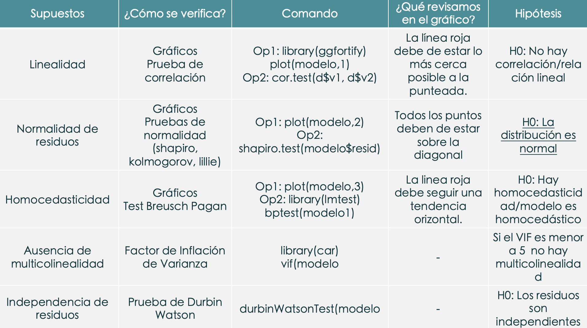

Revancha

Tidyverse
Filtramos y mostramos los resultados de la variable Type de manera descendente.
## Type n
## 1 Authoritarian regime 57
## 2 Flawed democracy 52
## 3 Hybrid regime 33
## 4 Full democracy 22Democracy_score por tipo de democracia ¿Qué nos dicen los resultados?
data%>%
group_by(., Type) %>%
summarise(mean = mean(Democracy_Score,na.rm=TRUE), n = n()) %>%
arrange(desc(mean))## # A tibble: 4 × 3
## Type mean n
## <chr> <dbl> <int>
## 1 Full democracy 8.75 22
## 2 Flawed democracy 6.89 52
## 3 Hybrid regime 5.14 33
## 4 Authoritarian regime 2.76 57¿Cuántos países son menor que la media de la variable Inecuality?
## Min. 1st Qu. Median Mean 3rd Qu. Max.
## 1.00 3.60 5.20 5.24 7.10 9.60## n
## 1 84A partir de la nueva data frame creada revisemos los casos solo del tipo régimen autoritario. ¿Qué nos dice la variable state_legit?
MenMedia%>%
filter(Type=="Authoritarian regime") %>%
summarise(max(State_Legit),
min(State_Legit),
mean(State_Legit))## max(State_Legit) min(State_Legit) mean(State_Legit)
## 1 9.2 6.3 7.95- Inestabilidad para mantener la legitimidad ante la población.
SUPUESTOS
Modelo 1:
Variable dependiente:
- Democracy index
Variables independientes:
- Security
- State_legit
- Hum_Rights
##
## Call:
## lm(formula = Democracy_Score ~ Security + State_Legit + Hum_Rights,
## data = .)
##
## Residuals:
## Min 1Q Median 3Q Max
## -2.09926 -0.65385 -0.02157 0.57579 2.66256
##
## Coefficients:
## Estimate Std. Error t value Pr(>|t|)
## (Intercept) 9.42953 0.18566 50.791 < 2e-16 ***
## Security 0.14638 0.04963 2.949 0.00366 **
## State_Legit -0.47864 0.06075 -7.878 4.78e-13 ***
## Hum_Rights -0.38068 0.06805 -5.594 9.39e-08 ***
## ---
## Signif. codes: 0 '***' 0.001 '**' 0.01 '*' 0.05 '.' 0.1 ' ' 1
##
## Residual standard error: 0.9223 on 160 degrees of freedom
## Multiple R-squared: 0.8356, Adjusted R-squared: 0.8325
## F-statistic: 271 on 3 and 160 DF, p-value: < 2.2e-16- R-squared
- P-value: 2.2e-16
- Ecuación del modelo es y= 9.42953 + 0.14638s -0.47864L -0.38068H.
- ¿Qué podemos decir de la ecuación?
Recordando los supuestos…


1- Linealidad (el problema es la no linealidad)
Descripción Como su nombre lo dice, debe de existir una linealidad entre la variable independiente y dependiente, en otras palabras,la linealidad indica que el valor esperado de la variable dependiente es una función lineal de cada variable independiente, manteniendo las demás fijas. La pendiente de esa línea no depende de los valores de las otras variables, por ello también nos fijamos variable por variable. Los efectos de diferentes variables independientes sobre el valor esperado de la variable dependiente son aditivos. Si este supuesto no se cumple significaría que posiblemente existan variables que no aporten al modelo o que se trate de una relación no lineal.
Cómo detectarlo
OPCIÓN 1: Exploración gráfica: Plot de valores residuales frente a valores predichos.
Código e interpretación
Usando el código autoplot, la línea azul debería de estar lo más cercana a la línea punteada horizontal.A partir del grafico podemos observar que se forma una curva leve; sin emabrgo, se aproximan a la linea del medio.
2. Normalidad de residuos (el problema es la NO normalidad)
Descripción
Identificar si los errores siguen una distribución normal. La resta del valor observado menos el valor pronosticado (residuos) siguen una distribución normal, esto es importante porque si es que no se cumple no se podrían aplicar las pruebas globales del modelo.
Cómo detectarlo
Exploración gráfica: QQ plot de residuos Pruebas de normalidad a los residuos. Normalmente bastaría con la prueba de Shapiro Wilk, pero también se pueden probar otros como Lillieford, Kolmogorov (no es muy exigente), entre otros.
Código e interpretación
Si usamos sólo gráfico
Si usamos prueba de normalidad: aplicamos la prueba de Shapiro a los residuos del modelo si estos son menores a 50 casos y Kolmogorov a aquellos mayores a 50 casos.
##
## Lilliefors (Kolmogorov-Smirnov) normality test
##
## data: modelo1$resid
## D = 0.050489, p-value = 0.3886Ojo con la hipótesis nula. H0: Es normal (distribución normal) | Ha: No es normal (no hay distribución normal)
Si el pvalor es menor a 0.05 entonces NO existe normalidad de residuos (problemas!), se rechazaría la distribución normal.
Al realizar el shapiro test, observamos que el p-values es 0.3886, mayor a 0.05, por lo que sí existe normalidad de los residuos El modelo sí pasa este supuesto.
3- Homocedasticidad (el problema es la heterocedasticidad)
Descripción
La homocedasticidad (también conocido como homogeneidad en la varianza de los residuos) indica que las variancias de los errores son constantes. Cuando no se cumple es un problema porque los estimadores no son consistentes ni eficientes y se presenta el caso de la heterocedasticidad.
Cómo detectarlo
OPCIÓN 1: Exploración gráfica: diagrama de residuos standarizados y valores predichos.
OPCIÓN 2: Con el Score Test for Non-Constant Error Variance, también llamado Test Breusch Pagan. Evalúa si la varianza del error cambia con el nivel de la variable respuesta (valores ajustados) o con una combinación lineal de predictores.
Código e interpretación
Si usamos el gráfico
En el Gráfico la línea azul debe seguir una tendencia horizontal, esto representaría que la distribución de los puntos son uniformes. Al ver nuestro gráfico nos damos cuenta que la línea azul va hacia abajo, lo cual nos dice que el gráfico no es concluyente aún. Vamos al test.
Si usamos el test de BP:
##
## studentized Breusch-Pagan test
##
## data: modelo1
## BP = 4.1891, df = 3, p-value = 0.2418- H0: El modelo es homocedástico
- Ha: El modelo es heterocedástico
Si el pvalor es menor a 0.05 entonces el modelo es heterocedástico (problema! ☠️ ). Esta vez estamos frente a un modelo homocedástico.
- Se observa que tenemos un p-value de 0.2418. Ya que es mayor a 0.05, podemos afirmar que no tenemos problemas de heterocedasticidad, o que la varianza de los errores es constante. El modelo pasa este supuesto.
4. Ausencia de multicolinealidad (el problema es la presencia de multicolinealidad)
Descripción
Se aplica en la regresión lineal MÚLTIPLE. Significa que las variables explicativas están relacionadas linealmente entre sí. La multicolinealidad hace que los coeficientes del modelo se vuelvan inestables, es decir, oscilarán violentamente ante cambios mínimos en las variables de insumo. Esto entendería que existe una relación fuerte entre variables independientes, por lo tanto podría darnos un modelo inestable.
Cómo detectarlo
Con el Factor de Inflación de Varianza (VIF). los factores de inflación de varianza deben de ser menores de 5.
Mayor a 10, grave problema de multicolinealidad.
Código e interpretación
## Security State_Legit Hum_Rights
## 2.463469 5.749510 6.077168Valores > 5 indican presencia de multicolinealidad.
5.- Independencia de residuos (el problema es que existe autocorrelación en los residuos)
Descripción
Si los errores residuales no son independientes, es probable que demuestren algún tipo de patrón (que no siempre es obvio a simple vista).
Cómo detectarlo
Los puntos se deben acercar lo más posible a la línea oblicua del gráfico que representa la distribución normal.
Código e interpretación
## lag Autocorrelation D-W Statistic p-value
## 1 0.1538908 1.68339 0.036
## Alternative hypothesis: rho != 0el p-value de durbinWatsonTest es 0.036. Al ser menor a 0.05, entonces podemos afirmar que los residuos no son independientes o que están autocrrelacionados. El modelo tampoco pasa este supuesto.
Dinámica grupal